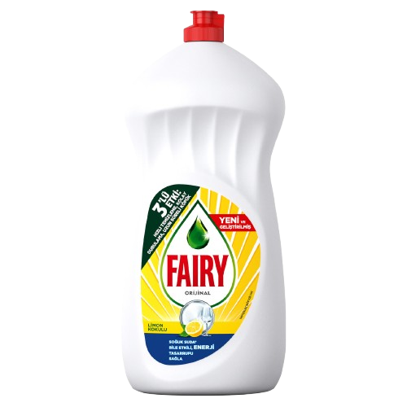

Tabağı temizlemek için süngeri kullan!

%100
yağda etkili!
yağda etkili!
En çok satan bidona göre soğuk suda
3 kata kadar daha fazla bulaşık yıkar
*Aynı miktarda en çok satan bidon deterjana kıyasla, 23°C'de
3 kata kadar daha fazla bulaşık yıkar
*Aynı miktarda en çok satan bidon deterjana kıyasla, 23°C'de